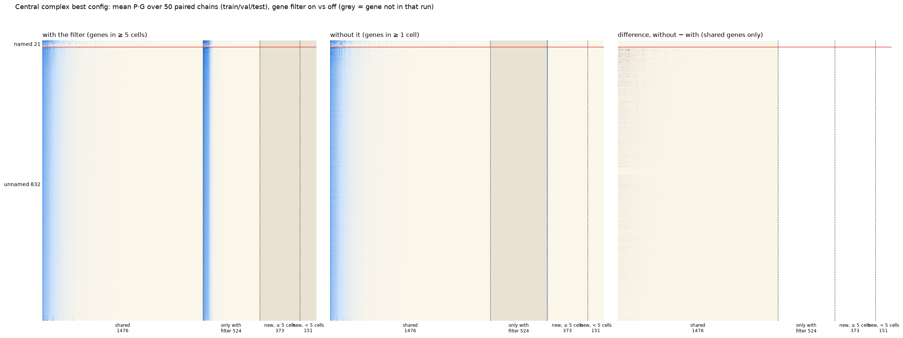

Real solves, 10 folds × 5 seeds per type. Drag a box on the matrix or the cell UMAP, or click a type to select its whole row. Scroll over a panel to zoom it; scroll in the margins to move the page. Double-click zooms out.
Same as consensus if match ≥
View
Matrix
Cell → type
Loading…
Search types and genes
P·G matrix
genes, high → low mean P·G
Cell UMAP
Selected region
A solve is one (fold, seed, split) run. "Same" means the solve's on/off calls (P·G > 0.5)
match the majority over all solves on at least the threshold share of the region cells it covers.
Cells take the type their metacell is assigned to: the type with the largest summed P over all solves (average),
or the type that wins most of the 50 fold × seed runs (majority).
Gene filter test: central complex, best config (g5_h2000_bn1_m1)
Same types, folds, seeds and metacells; only the gene filter differs. With the filter the 2000 genes
are the top-dispersion genes among those detected in ≥ 5 cells (the default, kept everywhere). Without it they are chosen among genes
detected in ≥ 1 cell. Full 10-fold × 5 seeds in both, 50 paired chains. Open either version from the Dataset menu:
· .
Connectome fit, mean r (C vs Ĉ)
split
with filter
without
paired difference
chains better without
train
0.666
0.672
+0.005
27 / 50
val
0.796
0.819
+0.023
28 / 50
test
0.800
0.815
+0.014
29 / 50
Slightly higher on average without the filter, but close to a coin flip chain by chain.
Which genes change
genes
count
types with P·G > 0.5
median max P·G
shared
1476
12.4%
0.031
dropped when the filter is removed
524
14.3%
0.011
new, seen in ≥ 5 cells
373
1.9%
0.007
new, seen in < 5 cells
151
0%
0.001
Removing the filter re-ranks dispersion, so expressed genes drop out and near-empty ones come in.
P·G and β
P·G on shared genes
r 0.997 · calls agree 99.9%
Present by majority
0.9% with · 0.23% without
β pairs on per train solve
675 with · 720 without
β genes seen in < 5 cells
0 with · 40 without
β pairs on by majority
35 with · 25 without

Mean P·G over the 50 paired chains. Rows: 21 named types above the red line, 832 unnamed below. Columns: shared genes,
genes only in the filtered run, new genes seen in ≥ 5 cells, and new genes seen in < 5 cells (grey = not in that run). Right: without − with, shared genes.
Experiments
Experiment
Genes
Train r
Val r
Test r
β pairs on
P·G > 0.5
Click a row to open that experiment with everything the main datasets have: P·G matrix, cell UMAP, β, search and the solve popup.
Every experiment is also in the Dataset menu. One solve per split, so a single run's seed noise is about ±0.02 r.
Anatomy: where the model fits
Held-out fit drawn on the real neurons. Every type is scored on the test block of the fold that held it out
(10 folds × 5 seeds): r = Pearson r between observed C and predicted Ĉ over the type's row and column there, loss = their mean squared residual
after one rescale of Ĉ per solve. Voxels average r (or loss) over the types whose arbors pass through them.
Show
Colour by
Show the worst voxels
Voxel opacity
Drag to rotate · Shift-drag to pan · scroll to zoom · click a neuron or a voxel
Summary
Neuropils
Neuropil
r
Loss
Missed
False
Pairs
Every held-out type pair counts for a neuropil by how much of both types' synapses lie there, so unconnected pairs count too.
Missed = loss on connected pairs; False = loss on unconnected pairs. Click a neuropil to show the 40 types with most arbor there.
Types
Worst fit (lowest r)
Best fit (highest r)
β matrix
rows: gene i · columns: gene j
Selected β region
Gene i
Gene j
On in
Mean β
β is fitted on train and frozen for val and test (rescaled by one number), so each
dataset has 50 distinct β: 10 folds × 5 seeds. A pair is on when β > 0.1; β is otherwise ~1e-14.
Only pairs on in at least one β are drawn. "Same" means a β's on/off calls match the majority on at least the
threshold share of the region's active pairs it holds.